Experiment result
Critical difference

Micro-benchmark Critical difference
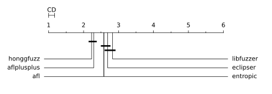
| Fuzzer | Rank |
|---|
| honggfuzz | 2.23 |
| aflplusplus | 2.29 |
| afl | 2.58 |
| entropic | 2.58 |
| eclipser | 2.69 |
| libfuzzer | 2.83 |
Overall (ranking by edges covered)
- honggfuzz (393,579 edges covered), success rate: 40.90%(787/1924 pairs)
- aflplusplus (388,142 edges covered), success rate: 41.94%(807/1924 pairs)
- eclipser (373,447 edges covered), success rate: 39.50%(760/1924 pairs)
- afl (373,027 edges covered), success rate: 40.54%(780/1924 pairs)
- entropic (366,796 edges covered), success rate: 40.44%(778/1924 pairs)
- libfuzzer (354,804 edges covered), success rate: 37.89%(729/1924 pairs)
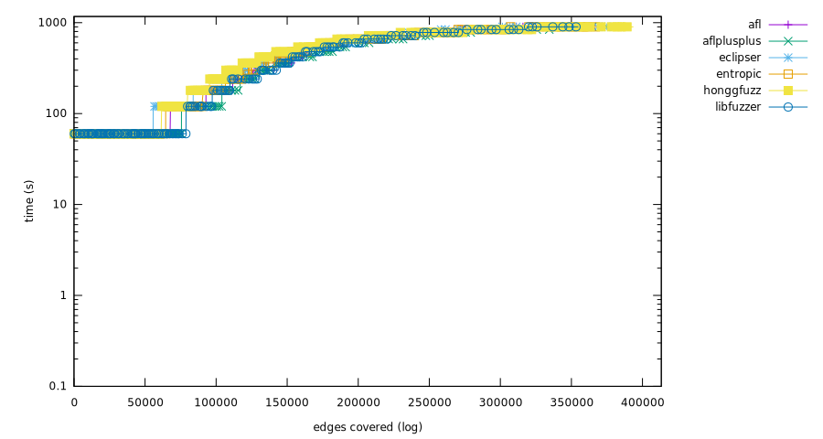

bloaty_fuzz_target
Ranking
- eclipser, (17,045 edges covered), success rate: 15.46%(15/97 pairs)
- honggfuzz, (15,424 edges covered), success rate: 19.59%(19/97 pairs)
- afl, (15,179 edges covered), success rate: 17.53%(17/97 pairs)
- entropic, (13,588 edges covered), success rate: 15.46%(15/97 pairs)
- libfuzzer, (12,286 edges covered), success rate: 11.34%(11/97 pairs)
- aflplusplus, (11,518 edges covered), success rate: 13.40%(13/97 pairs)
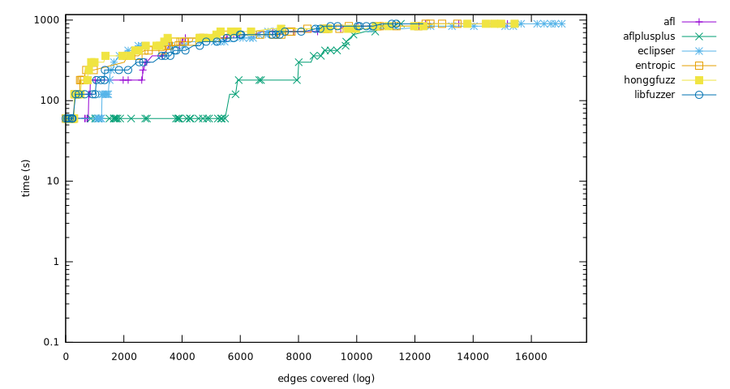 
Mann-Whitney U test
curl_curl_fuzzer_http
Ranking
- aflplusplus, (29,129 edges covered), success rate: 16.49%(16/97 pairs)
- honggfuzz, (27,184 edges covered), success rate: 16.49%(16/97 pairs)
- afl, (26,248 edges covered), success rate: 9.28%(9/97 pairs)
- eclipser, (26,080 edges covered), success rate: 7.22%(7/97 pairs)
- entropic, (25,754 edges covered), success rate: 14.43%(14/97 pairs)
- libfuzzer, (24,395 edges covered), success rate: 8.25%(8/97 pairs)


Mann-Whitney U test
freetype2-2017
Ranking
- honggfuzz, (29,081 edges covered), success rate: 23.16%(22/95 pairs)
- aflplusplus, (23,488 edges covered), success rate: 11.58%(11/95 pairs)
- eclipser, (21,617 edges covered), success rate: 16.84%(16/95 pairs)
- afl, (21,193 edges covered), success rate: 11.58%(11/95 pairs)
- entropic, (18,698 edges covered), success rate: 12.63%(12/95 pairs)
- libfuzzer, (18,128 edges covered), success rate: 12.63%(12/95 pairs)
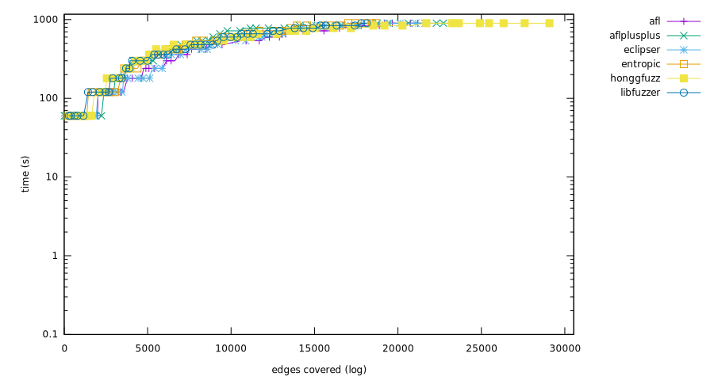 
Mann-Whitney U test

harfbuzz-1.3.2
Ranking
- aflplusplus, (23,819 edges covered), success rate: 20.21%(19/94 pairs)
- honggfuzz, (23,788 edges covered), success rate: 20.21%(19/94 pairs)
- eclipser, (19,817 edges covered), success rate: 24.47%(23/94 pairs)
- afl, (19,273 edges covered), success rate: 24.47%(23/94 pairs)
- entropic, (17,912 edges covered), success rate: 21.28%(20/94 pairs)
- libfuzzer, (17,698 edges covered), success rate: 23.40%(22/94 pairs)
Mann-Whitney U test
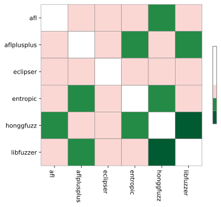
jsoncpp_jsoncpp_fuzzer
Ranking
- honggfuzz, (4,228 edges covered), success rate: 100.00%(98/98 pairs)
- afl, (4,228 edges covered), success rate: 100.00%(98/98 pairs)
- entropic, (4,228 edges covered), success rate: 100.00%(98/98 pairs)
- eclipser, (4,227 edges covered), success rate: 98.98%(97/98 pairs)
- libfuzzer, (4,224 edges covered), success rate: 97.96%(96/98 pairs)
- aflplusplus, (4,175 edges covered), success rate: 93.88%(92/98 pairs)
 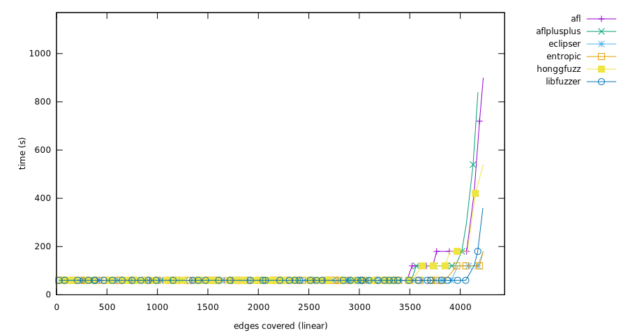
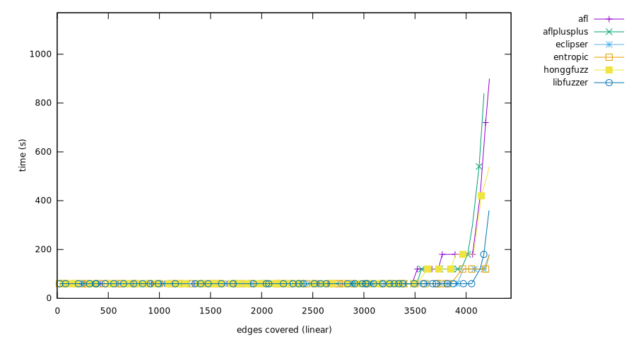
Mann-Whitney U test
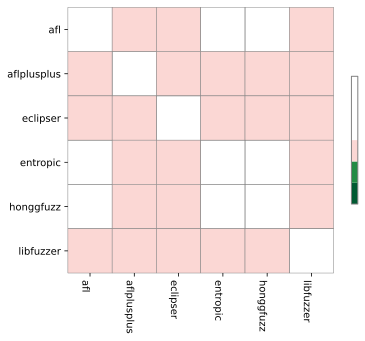
lcms-2017-03-21
Ranking
- aflplusplus, (10,734 edges covered), success rate: 32.63%(31/95 pairs)
- honggfuzz, (9,463 edges covered), success rate: 37.89%(36/95 pairs)
- eclipser, (8,630 edges covered), success rate: 35.79%(34/95 pairs)
- afl, (8,531 edges covered), success rate: 40.00%(38/95 pairs)
- entropic, (8,131 edges covered), success rate: 30.53%(29/95 pairs)
- libfuzzer, (7,382 edges covered), success rate: 27.37%(26/95 pairs)
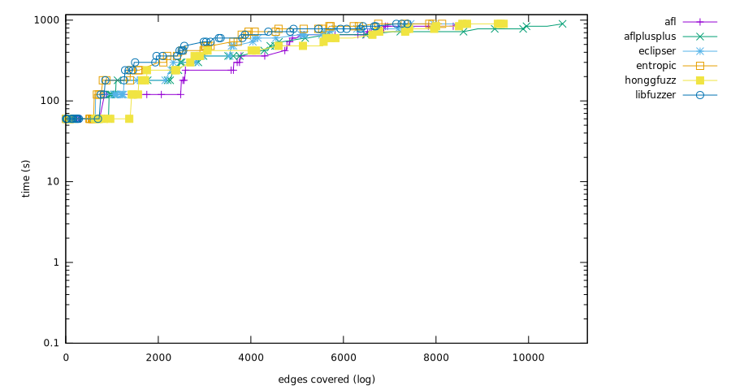 
Mann-Whitney U test
libjpeg-turbo-07-2017
Ranking
- aflplusplus, (12,265 edges covered), success rate: 56.12%(55/98 pairs)
- afl, (9,790 edges covered), success rate: 47.96%(47/98 pairs)
- eclipser, (9,697 edges covered), success rate: 48.98%(48/98 pairs)
- honggfuzz, (9,128 edges covered), success rate: 34.69%(34/98 pairs)
- entropic, (8,800 edges covered), success rate: 36.73%(36/98 pairs)
- libfuzzer, (7,071 edges covered), success rate: 26.53%(26/98 pairs)

Mann-Whitney U test

libpcap_fuzz_both
Ranking
- aflplusplus, (21,871 edges covered), success rate: 44.33%(43/97 pairs)
- libfuzzer, (18,401 edges covered), success rate: 36.08%(35/97 pairs)
- honggfuzz, (18,049 edges covered), success rate: 34.02%(33/97 pairs)
- entropic, (17,886 edges covered), success rate: 35.05%(34/97 pairs)
- afl, (17,469 edges covered), success rate: 38.14%(37/97 pairs)
- eclipser, (16,520 edges covered), success rate: 37.11%(36/97 pairs)


Mann-Whitney U test

libpng-1.2.56
Ranking
- aflplusplus, (7,228 edges covered), success rate: 71.72%(71/99 pairs)
- honggfuzz, (6,266 edges covered), success rate: 62.63%(62/99 pairs)
- entropic, (6,093 edges covered), success rate: 57.58%(57/99 pairs)
- libfuzzer, (5,886 edges covered), success rate: 44.44%(44/99 pairs)
- eclipser, (5,754 edges covered), success rate: 57.58%(57/99 pairs)
- afl, (5,647 edges covered), success rate: 59.60%(59/99 pairs)
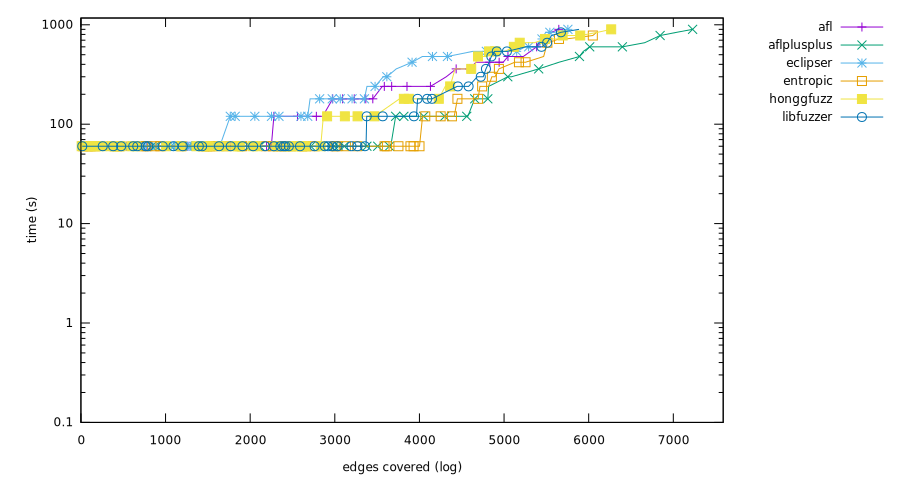 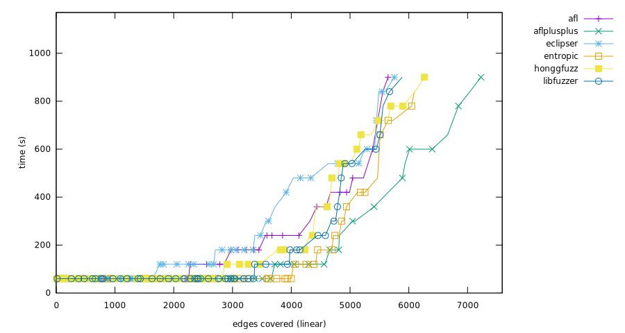
Mann-Whitney U test

libxml2-v2.9.2
Ranking
- honggfuzz, (31,024 edges covered), success rate: 58.95%(56/95 pairs)
- eclipser, (28,818 edges covered), success rate: 46.32%(44/95 pairs)
- afl, (28,421 edges covered), success rate: 46.32%(44/95 pairs)
- aflplusplus, (28,327 edges covered), success rate: 44.21%(42/95 pairs)
- entropic, (27,461 edges covered), success rate: 41.05%(39/95 pairs)
- libfuzzer, (25,982 edges covered), success rate: 33.68%(32/95 pairs)
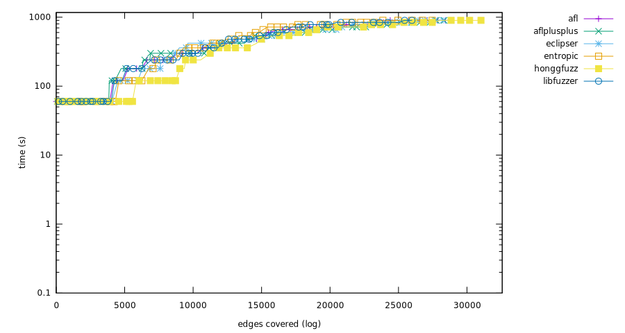
Mann-Whitney U test

libxslt_xpath
Ranking
- aflplusplus, (20,598 edges covered), success rate: 37.23%(35/94 pairs)
- honggfuzz, (19,702 edges covered), success rate: 35.11%(33/94 pairs)
- libfuzzer, (19,659 edges covered), success rate: 40.43%(38/94 pairs)
- afl, (19,628 edges covered), success rate: 37.23%(35/94 pairs)
- entropic, (19,582 edges covered), success rate: 38.30%(36/94 pairs)
- eclipser, (19,376 edges covered), success rate: 37.23%(35/94 pairs)
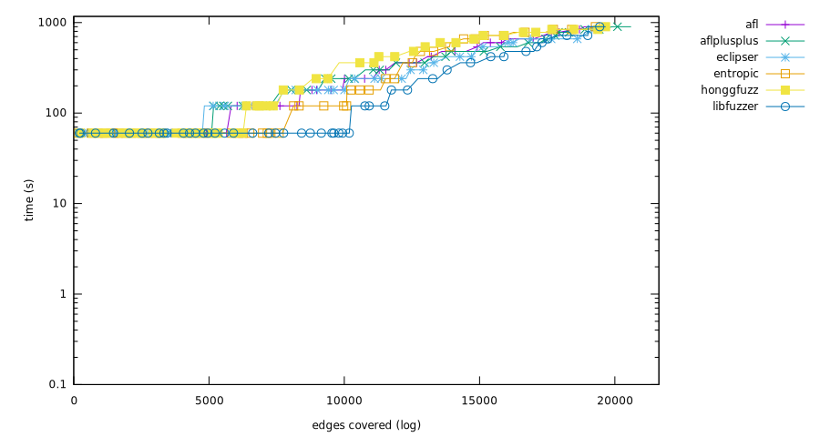 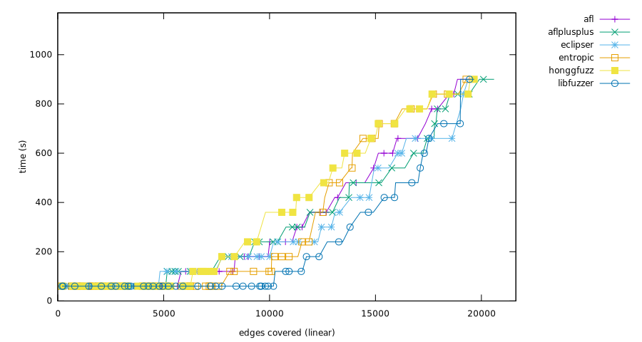
Mann-Whitney U test
mbedtls_fuzz_dtlsclient
Ranking
- aflplusplus, (4,439 edges covered), success rate: 45.92%(45/98 pairs)
- honggfuzz, (3,821 edges covered), success rate: 38.78%(38/98 pairs)
- afl, (3,626 edges covered), success rate: 41.84%(41/98 pairs)
- eclipser, (3,415 edges covered), success rate: 41.84%(41/98 pairs)
- entropic, (3,166 edges covered), success rate: 39.80%(39/98 pairs)
- libfuzzer, (2,967 edges covered), success rate: 36.73%(36/98 pairs)


Mann-Whitney U test

openssl_x509
Ranking
- entropic, (12,161 edges covered), success rate: 10.53%(10/95 pairs)
- libfuzzer, (11,914 edges covered), success rate: 8.42%(8/95 pairs)
- afl, (10,918 edges covered), success rate: 11.58%(11/95 pairs)
- eclipser, (10,589 edges covered), success rate: 10.53%(10/95 pairs)
- aflplusplus, (10,201 edges covered), success rate: 9.47%(9/95 pairs)
- honggfuzz, (10,171 edges covered), success rate: 13.68%(13/95 pairs)


Mann-Whitney U test
openthread-2019-12-23
Ranking
- entropic, (8,902 edges covered), success rate: 67.35%(66/98 pairs)
- aflplusplus, (8,804 edges covered), success rate: 63.27%(62/98 pairs)
- libfuzzer, (8,644 edges covered), success rate: 70.41%(69/98 pairs)
- eclipser, (8,518 edges covered), success rate: 58.16%(57/98 pairs)
- afl, (8,423 edges covered), success rate: 62.24%(61/98 pairs)
- honggfuzz, (8,381 edges covered), success rate: 48.98%(48/98 pairs)
 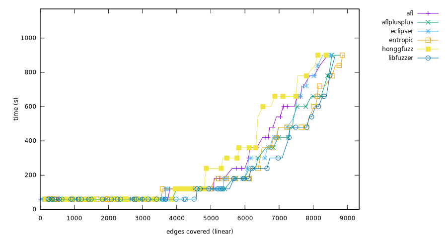
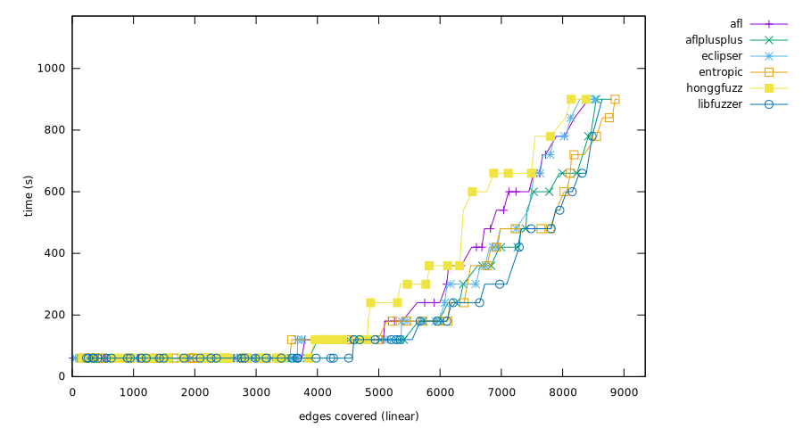
Mann-Whitney U test
php_php-fuzz-parser
Ranking
- entropic, (47,474 edges covered), success rate: 18.75%(18/96 pairs)
- honggfuzz, (47,241 edges covered), success rate: 18.75%(18/96 pairs)
- aflplusplus, (46,265 edges covered), success rate: 18.75%(18/96 pairs)
- afl, (46,248 edges covered), success rate: 22.92%(22/96 pairs)
- eclipser, (45,295 edges covered), success rate: 16.67%(16/96 pairs)
- libfuzzer, (44,657 edges covered), success rate: 18.75%(18/96 pairs)
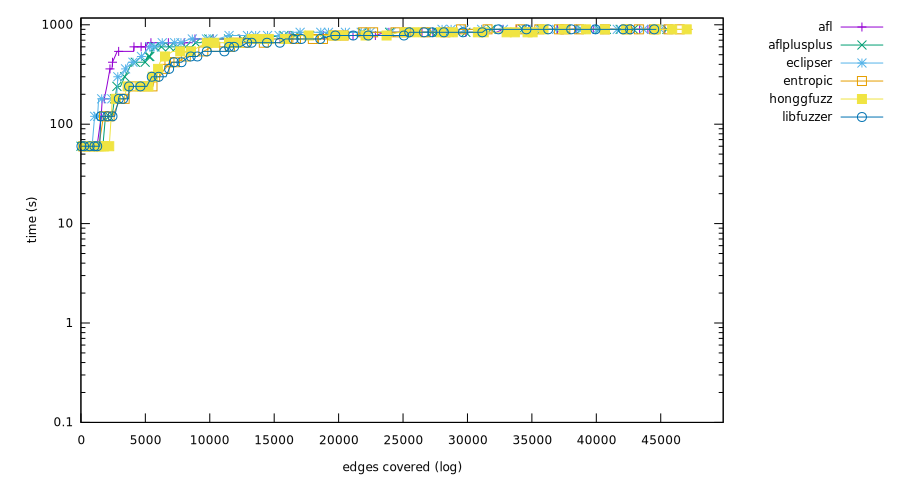 
Mann-Whitney U test
proj4-2017-08-14
Ranking
- entropic, (7,261 edges covered), success rate: 55.21%(53/96 pairs)
- libfuzzer, (7,250 edges covered), success rate: 53.12%(51/96 pairs)
- honggfuzz, (7,192 edges covered), success rate: 51.04%(49/96 pairs)
- aflplusplus, (6,808 edges covered), success rate: 41.67%(40/96 pairs)
- eclipser, (6,737 edges covered), success rate: 29.17%(28/96 pairs)
- afl, (6,587 edges covered), success rate: 29.17%(28/96 pairs)

Mann-Whitney U test

re2-2014-12-09
Ranking
- libfuzzer, (29,441 edges covered), success rate: 90.82%(89/98 pairs)
- eclipser, (29,438 edges covered), success rate: 86.73%(85/98 pairs)
- aflplusplus, (29,434 edges covered), success rate: 94.90%(93/98 pairs)
- honggfuzz, (29,380 edges covered), success rate: 82.65%(81/98 pairs)
- entropic, (29,347 edges covered), success rate: 87.76%(86/98 pairs)
- afl, (29,312 edges covered), success rate: 88.78%(87/98 pairs)
 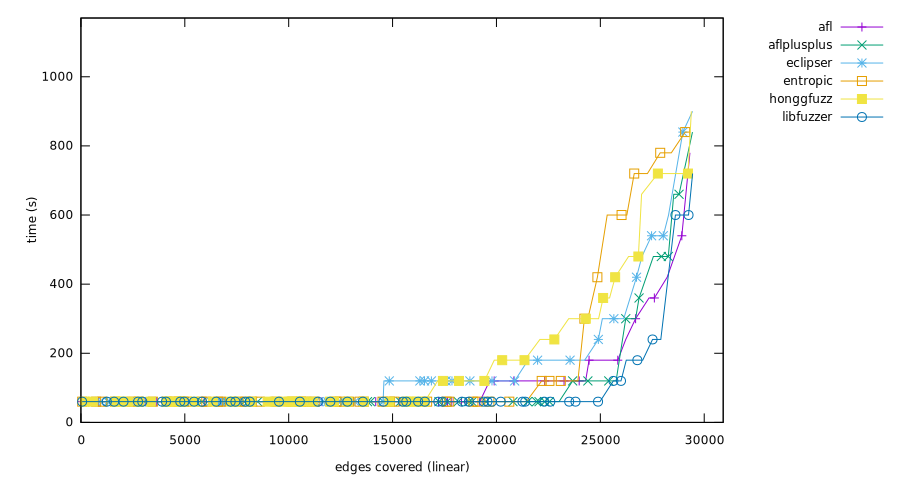
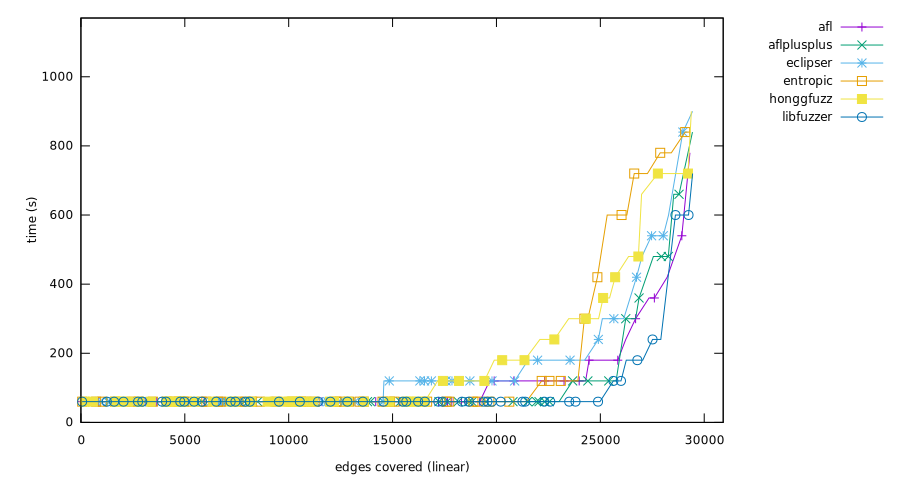
Mann-Whitney U test
sqlite3_ossfuzz
Ranking
- afl, (87,761 edges covered), success rate: 35.79%(34/95 pairs)
- eclipser, (87,200 edges covered), success rate: 33.68%(32/95 pairs)
- honggfuzz, (87,133 edges covered), success rate: 32.63%(31/95 pairs)
- entropic, (85,036 edges covered), success rate: 34.74%(33/95 pairs)
- libfuzzer, (84,284 edges covered), success rate: 35.79%(34/95 pairs)
- aflplusplus, (82,355 edges covered), success rate: 32.63%(31/95 pairs)


Mann-Whitney U test

systemd_fuzz-link-parser
Ranking
- honggfuzz, (1,424 edges covered), success rate: 33.68%(32/95 pairs)
- entropic, (1,286 edges covered), success rate: 31.58%(30/95 pairs)
- eclipser, (1,222 edges covered), success rate: 31.58%(30/95 pairs)
- libfuzzer, (1,222 edges covered), success rate: 29.47%(28/95 pairs)
- aflplusplus, (1,122 edges covered), success rate: 26.32%(25/95 pairs)
- afl, (1,061 edges covered), success rate: 29.47%(28/95 pairs)
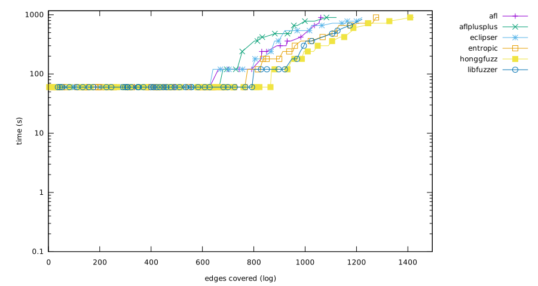 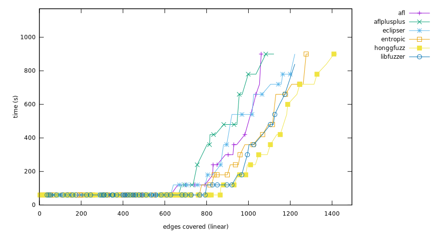
Mann-Whitney U test

vorbis-2017-12-11
Ranking
- aflplusplus, (5,562 edges covered), success rate: 59.57%(56/94 pairs)
- honggfuzz, (5,499 edges covered), success rate: 52.13%(49/94 pairs)
- entropic, (4,030 edges covered), success rate: 56.38%(53/94 pairs)
- afl, (3,484 edges covered), success rate: 53.19%(50/94 pairs)
- eclipser, (3,452 edges covered), success rate: 52.13%(49/94 pairs)
- libfuzzer, (3,313 edges covered), success rate: 48.94%(46/94 pairs)


Mann-Whitney U test